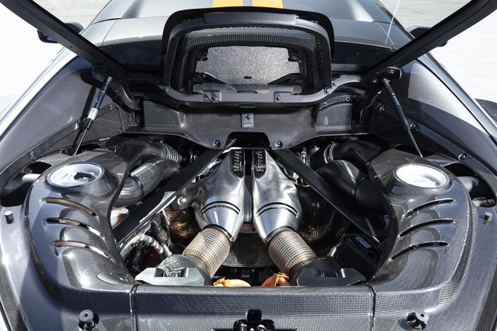
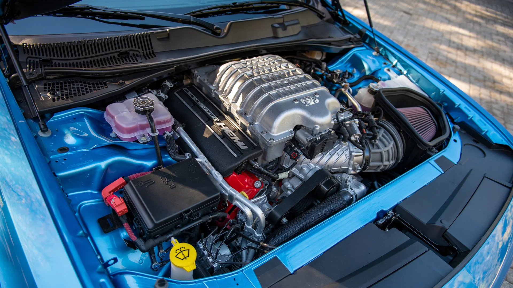
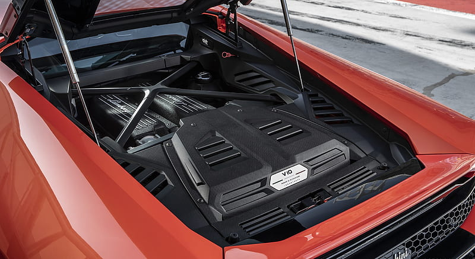

Un motor de combustión interna o motor de explosión es un tipo de máquina que obtiene energía mecánica directamente de la energía química de un combustible que arde dentro de la cámara de combustión.
V6
En el pasado, los motores de 6 cilindros en línea eran predominantes, ya que no había necesidad de producir motores compactos, actualmente, el motor V6 es compacto y sólido. Su ha existido desde los primeros días del motor de combustión interna. A pesar de su simplicidad, su producción es menos costosa y, en general, más liviana. En comparación con un motor de cuatro cilindros, los motores V6 ofrecen más potencia y funcionan con mayor suavidad. El ahorro de combustible es uno de los mayores beneficios de adoptar un motor V6. Por último, los motores V6 pueden proporcionar más estabilidad y mejor manejo que sus homólogos V8.
Unos de los mejores motores V6, y más populares son el Toyota Supra 2JZ-GTE, BMW M3 E36 S50 , Porsche 911 Turbo 964 bóxer y Ferrari 296 GTB F163.

V8
Los motores V8 suelen ofrecer mejor potencia y aceleración. El V8 es una configuración muy común para camionetas, automóviles de gran tamaño y en vehículos tipo "muscle cars". Su cilindrada en raras ocasiones es inferior a los 3.0L y ha llegado a superar los 10.4L. Si utiliza su vehículo principalmente para transportar y remolcar, pueden proporcionarle una gran cantidad de energía estable. Al presionar ligeramente el acelerador, el conductor puede sentir la abundante fuerza y potencia del motor. Esta es una de las muchas razones para subirse a un automóvil con motor V8 y experimentar un viaje refinado y lujoso mientras disfruta de una aceleración más rápida y un mejor rendimiento.
Entre los motores V8 destaca el clásico Chevrolet 350 de 1967, junto con el conocido HEMI 6,2 litros V8 del Dodge Challenger. De las gamas más altas encontramos el Motor F154CD biturbo del Ferrari F8 Tributo y el Motor M840T del McLaren 765lt

V10
Las dos filas de 5 cilindros del V10 tienen normalmente una abertura de 60º o 90º entre las dos filas. Cada fila es un bloque de 5 cilindros en línea, con una configuración que se caracteriza por su funcionamiento sin vibraciones, por lo que no necesita árboles contrarrotantes de equilibrado. Por lo tanto, el motor V10 se caracteriza por su mayor fineza de funcionamiento debido a que las explosiones de los cilindros se hacen en intervalos de tiempo menores, produciéndose una por cada 72º de giro del cigüeñal en el caso de un motor de cuatro tiempos, lo que también posibilita el funcionamiento del motor a pocas revoluciones (menos de 1500 rpm) sin vibraciones ni tendencia a calarse.
Los motores V10 son usados principalmente en automóviles deportivos y camionetas de gran tamaño, pudiendo ser usados también en camiones pesados. También fueron usados en las carreras de Fórmula 1 desde el año 1989 hasta 2005, cuando el reglamento pasó a permitir solamente el uso de motores V8. Durante el período que fueron usados en la Fórmula 1 demostraron ser la configuración ideal, y en los últimos años en los que se permitió su uso fueron la opción elegida por prácticamente todas las escuderías.
Como los V10 tienen un uso más deportivo, no podia faltar el Viper V10 del Dodge ViperMotor V10 del Lamborghini Huracán, el Chevrolet 350 y el Motor V10 del Porsche Carrera GT
